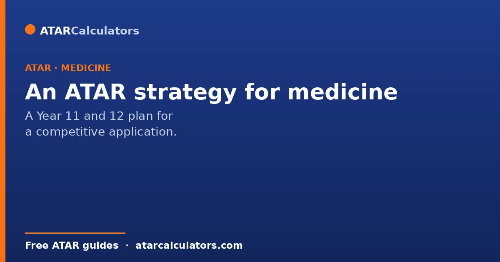
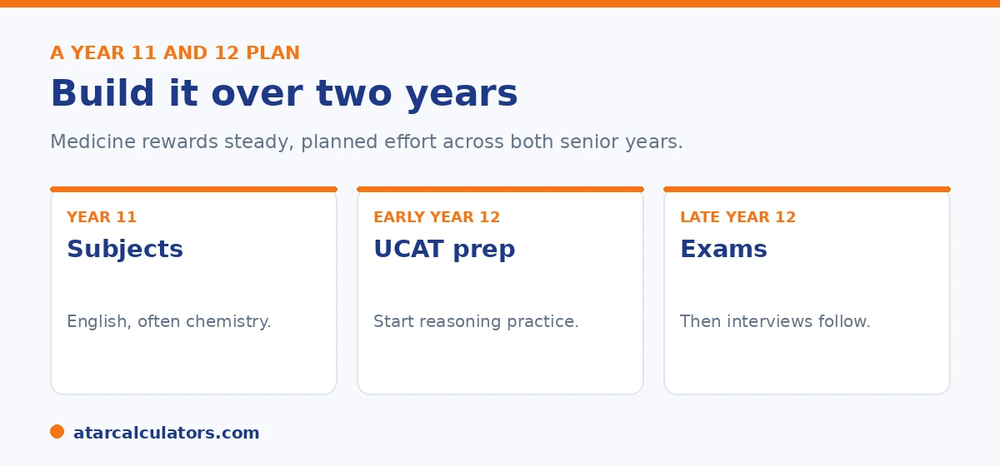

Here is the short version. A medicine strategy spans both senior years. In Year 11, choose strong subjects, including English and often chemistry, and build solid study habits. In early Year 12, start UCAT preparation alongside school. In late Year 12, focus on your exams, then prepare for interviews once results and UCAT scores are in. The aim is a high ATAR, a strong UCAT, and a confident interview, all built steadily.
Medicine is one of the few courses where you really do need a multi-year plan. The ATAR, the UCAT, and the interview each take preparation, and they overlap.
Below is a practical plan for Year 11 and 12. To explore your options, use our medicine ATAR calculator.
Key takeaways
- Medicine rewards a two-year plan, not last-minute effort.
- Choose strong subjects, including English and often chemistry.
- Start UCAT preparation in early Year 12.
- Focus on exams in late Year 12.
- Prepare for interviews once results and UCAT are in.
- Aim for a high ATAR, a strong UCAT, and a confident interview.
Year 11: choose your subjects
Your strategy starts with subject choice in Year 11. English is compulsory for most medical schools, and chemistry is often needed or recommended. Some courses also value maths or biology. Always check the prerequisites for your target universities.
Beyond ticking prerequisites, choose subjects you can score highly in. This is because a strong ATAR matters more than an impressive-looking subject list. Chemistry is the one to watch. Several medical schools genuinely need it. So if any university on your shortlist lists it as a prerequisite, take it in Year 11 rather than discovering the gap in Year 12 when it is too late. Biology is rarely needed but helps with first-year medicine and with the UCAT's science-flavoured reasoning. So it is a sensible companion. A maths subject supports the quantitative reasoning in the UCAT and keeps engineering and science degrees open as backups. What you should not do is load up on the hardest subjects purely because they scale well. A lower mark in a high-scaling subject can hurt your ATAR more than a strong mark in a moderate one. Pick the combination that clears the prerequisites and lets you perform.

Beyond prerequisites, choose subjects you can do well in, since your ATAR depends on strong results across the board. Pick a balance that plays to your strengths while covering the requirements.
Year 11: build the foundations
Year 11 is also when you build the habits that carry you through. Strong, consistent study routines now make Year 12 far less stressful. Aim to master content as you go, rather than leaving it to revise later.
It is worth starting to research universities early too. Knowing which ones you are aiming for, and their prerequisites and selection models, shapes the choices you make. See our medicine ATAR guide.
Early Year 12: start the UCAT
The UCAT is sat in Year 12, so preparation should begin early in the year, alongside school. The test measures reasoning under time pressure, which improves with practice, so do not leave it late.
Balance is key. The UCAT matters, but so does your ATAR, so do not let one crowd out the other. Build UCAT practice into a steady routine rather than cramming. See our UCAT and ATAR guide.
It helps to know what you are preparing for. The UCAT has several sections, verbal reasoning, decision making, quantitative reasoning, and situational judgement, each sat under tight time limits. So speed and technique matter as much as knowledge. The most common mistake is treating it like a content exam you can study for the week before. It is a skills test, and scores climb with weeks of timed practice, not days. A realistic plan is to start light practice a few months out, and learn the question types and the on-screen shortcuts. Then move to full timed sections closer to your sitting, so you build the pace the real test demands. Because the UCAT is sat mid-year while school continues, protect a small, regular slot for it. Two or three focused sessions a week beats a last-minute scramble. And it keeps your ATAR study on track at the same time.
Want to see your medicine options?
Try the medicine ATAR calculator →Late Year 12: focus on exams
Once the UCAT is done, the focus shifts to your final exams. This is where your ATAR is decided, so it deserves your full attention. A strong ATAR keeps the widest range of pathways open.
Keep perspective during this period. You have already done the UCAT, and interviews come later, so you can concentrate on exams without juggling everything at once.
After results: prepare for interviews
Interviews usually come after results and UCAT scores are released, when shortlists are made. So interview preparation belongs at the end of the process, once you know where you stand.
Practise the multiple mini interview format, including ethical scenarios and communication. Mock interviews help a lot. A calm, well-prepared interview can be what secures an offer. See our pathways guide if you are also weighing the graduate route.
Understanding the format takes the fear out of it. In a multiple mini interview you rotate through several short stations, each a few minutes long, with a fresh scenario and a fresh assessor at each. The stations are not testing medical knowledge. They probe how you think and communicate. How you handle an ethical dilemma, how you respond to someone who is upset, how you weigh two bad options. Because each station is independent, a weak one does not sink the whole interview. So you can reset and start the next fresh. What assessors reward is structured, empathetic reasoning. Acknowledging different perspectives, thinking out loud in an organised way, and staying calm. This is a learnable skill. The students who interview well are usually the ones who practised out loud with someone giving feedback, not the ones who simply read about it. A handful of realistic mock stations, ideally with a teacher, mentor or peer playing the assessor, will do more than any amount of silent preparation.
Does Chemistry matter?
Chemistry is a prerequisite or strongly recommended for many medicine programs, so it is a sensible subject to take if you are aiming for medicine. It also supports the science you will study later, whichever route you take.
That said, requirements vary, so check the prerequisites for the specific universities you are targeting. Where Chemistry is required, take it; where it is only recommended, it is still usually a wise choice for a medicine applicant.
Beyond prerequisites, choose subjects you can score highly in, since a top ATAR is essential. Chemistry helps many applicants, but only if you can perform well in it alongside your other subjects.
Building a backup plan
Because medicine is so competitive, every medicine applicant needs a backup plan. The best backup is a related science or health degree that also serves as a graduate-entry route into medicine later.
This way, a first-round miss is not a dead end. You enter a degree you are happy with, perform well, and keep medicine open through the graduate pathway. See pathways below the usual cutoff.
A Year 11 to 12 timeline
A workable timeline starts in Year 11: choose scorable subjects including any prerequisites, and build strong study habits. In Year 12, begin UCAT preparation early in the year, keep your ATAR marks high, and research university requirements.
Later in Year 12, sit the UCAT, submit broad applications, and prepare for interviews if you progress. Spreading these tasks across two years, rather than cramming them, protects both your ATAR and your medicine application.
Common questions
What's the best ATAR strategy for medicine?
Plan across both senior years. Choose strong subjects in Year 11, including English and often chemistry. Start UCAT preparation in early Year 12, and focus on exams late in Year 12. Then prepare for interviews once results are in.
Which subjects should I take for medicine?
English is compulsory for most medical schools, and chemistry is often needed or recommended. Some courses value maths or biology too. Beyond prerequisites, choose subjects you can do well in, and check each university.
When should I prepare for the UCAT?
Start early in Year 12, since the test is sat that year and reasoning improves with practice. Build it into a steady routine alongside school, rather than cramming, and keep it balanced with your ATAR preparation.
Do I need chemistry for medicine?
Often, yes. Chemistry is needed or recommended at many medical schools, though not all. Always check the prerequisites for your target universities, since they vary. English is the more universal requirement.
When are medicine interviews held?
Usually after results and UCAT scores are released, when universities make their shortlists. So interview preparation belongs at the end of the process. Practise the multiple mini interview format and ethical scenarios.
Plan your path to medicine
See realistic pathways into medicine based on your ATAR. Free, and no signup.
Open the medicine ATAR calculator →Related guides
This guide is general information for students and parents, not formal admissions advice. ATAR cut-offs, UCAT and GAMSAT requirements, interview formats and pathways vary by university and change every year. For graduate entry, applications run through GEMSAS, and the UCAT and GAMSAT are run by their own bodies. Any figures here are approximate and based on recent years. So always confirm the current details with each university and your state admissions centre (such as UAC, VTAC, QTAC, SATAC or TISC). Reviewed by the ATARCalculators Editorial Team.